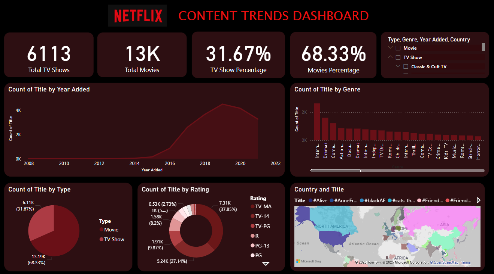

Netflix Content
Trends Dashboard
Analyzing genre distribution and content trends across Netflix’s global catalog.
Project Overview
Key Business Insight: Genre diversification is a primary driver of global subscriber growth, with international content investments showing higher ROI than domestic-only releases.
This project analyzes Netflix's content library to identify dominant genres, content growth patterns, and shifts in viewer-preferred categories over time.
The primary objective was to understand how Netflix's genre strategy has evolved and which content categories contribute most to platform diversity and audience reach.
"The analysis highlights how genre diversification plays a key role in content strategy."
The dashboard enables stakeholders to explore genre-wise distribution, release trends, and regional content variations through interactive visuals.
Project Details
-
person
Role: Data Analyst
-
calendar_month
Date:July 2025
-
construction
Tools: Power BI, Excel
-
bar_chart_4_bars
Techniques: Genre Analysis, Trend Analysis, Dashboard Design
Key Visualizations

Genre-wise Content Distribution
Content Release Trends by Genre